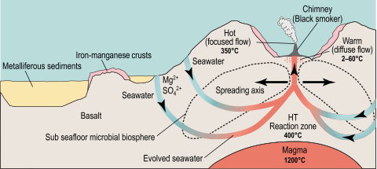

Lecture overview¶
In this lecture we will explore flow in porous media and use the HydrothermalFoam solvers to solve for flow in submarine hydrothermal systems.

Fig. 6 Cartoon illustrating flow in a submarine hydrothermal circulation system [Ingebritsen et al., 2010].¶
A numerical of hydrothermal flow at the East Pacific Rise at 9N by [Hasenclever et al., 2014].